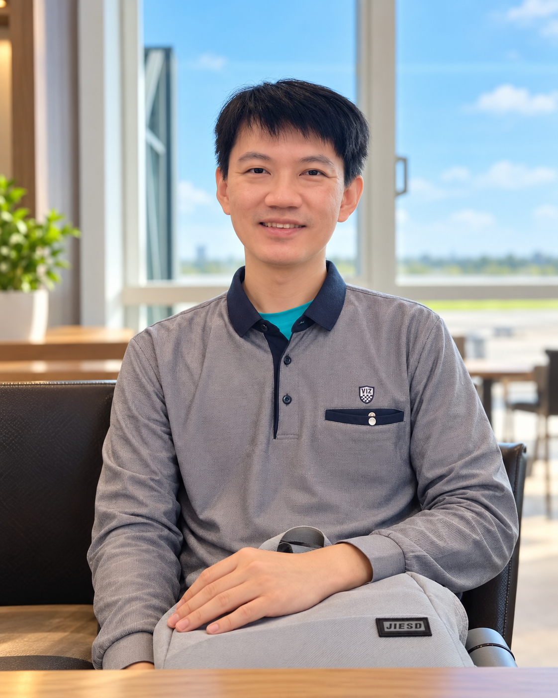

先聽懂
咳嗽、喘或胸悶，往往不只是一句「沒事」就能讓人安心。先理解您真正困擾的地方。
醫療，除了專業判斷，也需要讓人聽得懂的說明與可以安心討論的空間。
門診地點與聯繫方式從醫初心
醫學知識很複雜，但病人最想知道的問題通常很直接：「我怎麼了？接下來該怎麼辦？」
高醫師希望把專業判斷轉成病人聽得懂、回家也用得上的資訊。每一次看診，不只處理眼前的症狀，也幫助病人更了解自己的身體。
咳嗽、喘或胸悶，往往不只是一句「沒事」就能讓人安心。先理解您真正困擾的地方。
把症狀、檢查結果與可能的處理方向串起來，用容易理解的話，說明每個選擇的意義。
需要追蹤、進一步檢查或轉介時，清楚說明原因，和您一起找出合適的下一步。
診療專長
實際檢查、診斷與處置仍以門診評估為準。
胸腔及呼吸系統
一般內科與其他
學歷與經歷
成功大學醫學系醫學士。曾於成大醫院、奇美醫院及新樓醫院服務，累積胸腔、重症與一般內科的臨床經驗。
內科部住院醫師、胸腔科總醫師、兼任主治醫師
胸腔科主治醫師
加護重症醫學主治醫師
成大醫院最佳住院醫師、教學優良總醫師、內科臨床指導教師
專科資格及認證
門診地點
高醫師於兩個門診地點提供服務。實際門診時段與預約方式，請以各診所官方 LINE 或電話說明為準。
永康區
LINE ID：@cm166
中西區
LINE ID：@721fzsoc
醫學教育
高醫師多次參與基層醫師再教育課程，分享氣喘相關主題，讓臨床經驗與衛教觀念持續交流。
點選照片可放大瀏覽。
醫師之外
工作之外，高醫師喜歡彈鋼琴、旅行，並持續探索 AI、投資、日本文化與語言學習。練琴需要耐心，旅行需要觀察；持續學習與留心細節，也成為面對臨床新知與衛教方式的日常習慣。
前往鋼琴 YouTube 頻道
在鋼琴前，
練習傾聽與專注。
聯繫高醫師
可透過官方 LINE 取得高醫師相關資訊與服務說明。若有緊急症狀，請優先就近就醫或聯絡緊急醫療服務。
加入官方 LINELINE ID：@174kjvzv